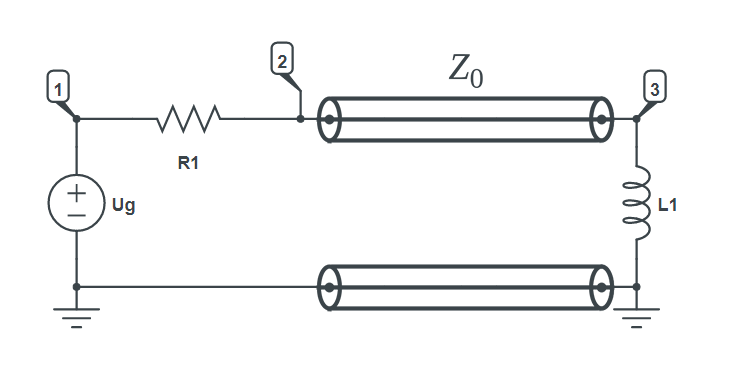

Transmission line
Circuit description
In electrical engineering, a transmission line is a specialized cable or other structure designed to conduct electromagnetic waves in a contained manner. The term applies when the conductors are long enough that the wave nature of the transmission must be taken into account.

Goals
- Calculate current of
L1 - Calculate voltage across
L1
Modeling the circuit
First we include Symbolics.jl and CircuitS.
using Symbolics
include("../CircuitS.jl")The we create the circuit and add all of the elements as shown in the picture above:
circuit = create_circuit()
add_element([Resistor, "R1", 1, 3], circuit)
add_element([Inductor, "L1", 0, 2], circuit)
add_element([Voltage, "Ug", 3, 0], circuit)
add_element([TransmissionLine, "T", [1, 0], [2,0], ["Zc", "t"] ], circuit)Simulation
After we've built everything, we initialise and simulate the circuit:
init_circuit(circuit)
result = simulate(circuit, false)
println(result)Again, due to simplifying errors in JuliaSymbolics, we cannot shorten the resulting expression.
We passed false as a second argument to simulate function which indicates a flag to not use simplify. As a result we have long expressions.
As it so happens, in this example, simplify only fails for current I_T_3 (current of transmission line on node 3), and runs successfully for others.
Dict{Any, Any} with 6 entries:
"I_T_2" => ((-(Ug*exp(-s*t) + (Ug*(R1*exp(-s*t) - Zc*exp(-s*t))*(1 + exp(-s*t))) / (-Zc - R1*(1 + exp(-s*t))))*(L1*s*…
"V3" => -((L1*s*(Ug*exp(-s*t) + (Ug*(R1*exp(-s*t) - Zc*exp(-s*t))*(1 + exp(-s*t))) / (-Zc - R1*(1 + exp(-s*t))))) …
"V2" => Ug + (-R1*((-(Ug*exp(-s*t) + (Ug*(R1*exp(-s*t) - Zc*exp(-s*t))*(1 + exp(-s*t))) / (-Zc - R1*(1 + exp(-s*t)…
"I_Ug" => (-((R1*((-(Ug*exp(-s*t) + (Ug*(R1*exp(-s*t) - Zc*exp(-s*t))*(1 + exp(-s*t))) / (-Zc - R1*(1 + exp(-s*t))))…
"I_T_3" => (Ug*exp(-s*t) + (Ug*(R1*exp(-s*t) - Zc*exp(-s*t))*(1 + exp(-s*t))) / (-Zc - R1*(1 + exp(-s*t)))) / ((-(R1*…
"V1" => UgVoltage across L1 is the potential of node 3:
V3 = simplify(result["V3"])
println(V3)(-L1*s*(-Ug*Zc*(exp(-s*t)^2) - 2Ug*Zc*exp(-s*t))) / (R1*Zc + Zc^2 + L1*R1*s + L1*Zc*s + R1*Zc*(exp(-s*t)^2) + R1*Zc*exp(-s*t) + L1*R1*s*exp(-s*t) + L1*Zc*s*(exp(-s*t)^2) - (Zc^2)*(exp(-s*t)^2) - L1*R1*s*(exp(-s*t)^2))We can still retrieve the current I_T_3 even though we can't simplify it:
println(result["I_T_3"])(Ug*exp(-s*t) + (Ug*(R1*exp(-s*t) - Zc*exp(-s*t))*(1 + exp(-s*t))) / (-Zc - R1*(1 + exp(-s*t)))) / ((-(R1*exp(-s*t) - Zc*exp(-s*t))*(L1*s*exp(-s*t) - Zc*exp(-s*t))) / (-Zc - R1*(1 + exp(-s*t))) - Zc - L1*s)